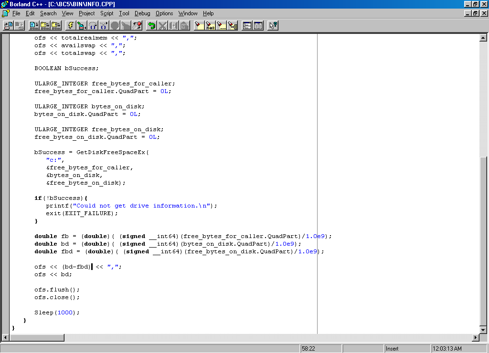
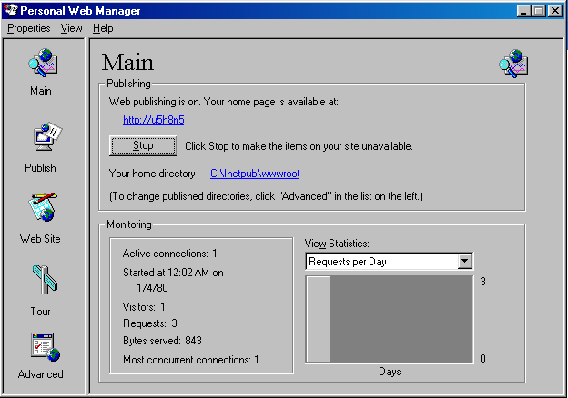
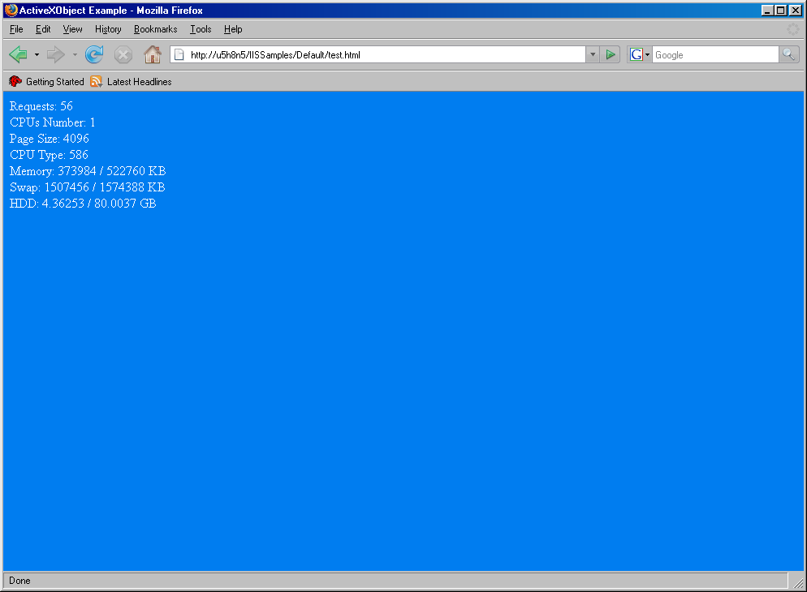
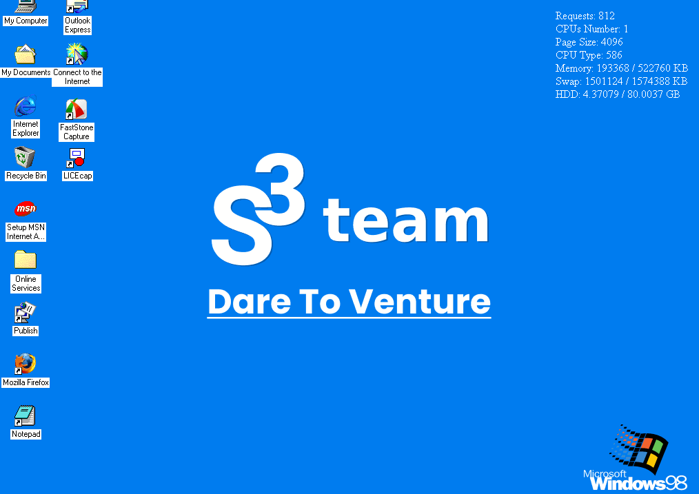
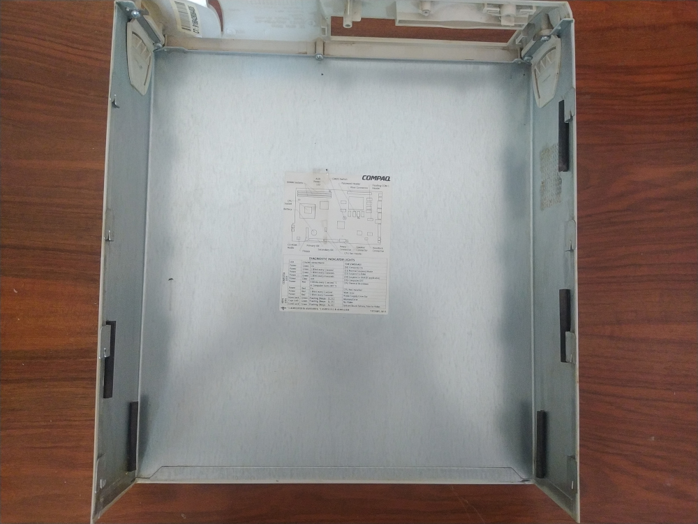
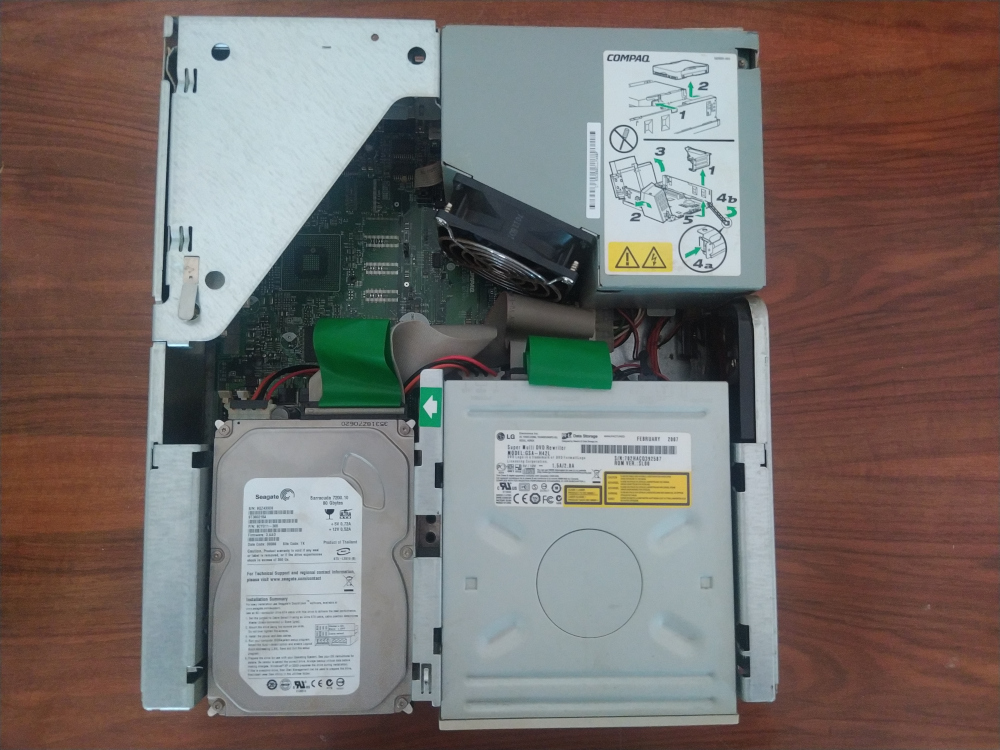

While cleaning out one of our basements, I came across an old Compaq Deskpro EN with a PIII processor. To my surprise, it booted up effortlessly with Windows XP, despite being powered off for years. This find brought back a flood of nostalgia and a renewed appreciation for how far technology has come. Over twenty years ago, I began my programming journey with C and C++ on a Windows 98 machine using Borland C++. Inspired by this trip down memory lane, alongside the recent signs that we're nearing the limits of Moore's Law, I decided to develop a server monitoring tool for Windows 98, using the same tools and technologies that once fueled my passion for the tech world.
Hardware Specs:
I needed to recreate a Windows 98 environment. Luckily, some retro PC shops in Bulgaria helped me get my hands on original Windows 98 CDs. The installation went smoothly, but even with Windows 98 SE, I ran into a slew of hardware driver issues. Thankfully, I found a bundle of drivers for the Compaq Deskpro EN on archive.org, which resolved the video and audio driver problems (huge thanks to the founders of archive.org for saving my eyes). Windows 98 performance was way better than the Windows XP one.
Pressed for time, I decided to keep it simple and reuse as many Windows components as possible. First, I needed a place to display the collected data. A good option was the Active Desktop component, which allows Windows 98 users to render HTML pages on their desktops. This seems like the ancestor of today’s JavaScript plugins and components ecosystem for Microsoft software. Using the IE5 engine, it could render any HTML page and display it on the desktop. This meant that with a simple C++ program using WMI, I could read the monitoring data, write it into an HTML file, and then have Active Desktop automatically render it on the screen
As an open-source enthusiast, I aimed to keep my development stack as open-source as possible. However, the open-source community was just beginning to evolve back then, limiting my IDE options to Code::Blocks, DJGPP, and Notepad++. Code::Blocks wouldn't start due to a missing ANSI component—it had two versions at the time, one with ANSI support and one with Unicode support. I could only find the Unicode versions, and since Windows 98 lacked Unicode support, Code::Blocks was not an option. DJGPP installed and ran fine but didn't include the Windows system headers, making it impossible to access the monitoring data. Notepad++ had the same issue as Code::Blocks, being available only in a Unicode version. This led me to turn to Borland C++, my go-to from my early programming days. The only way to get such an old version of Borland C++ was through archive.org (I figured using the free part of Borland C++ as abandonware was acceptable for this tutorial). Installing Borland C++ on Windows 98 felt like opening a time capsule, bringing me back to my school days and the first IDE I ever used.
After spending several hours tinkering, debugging, and resolving issues, I've come to realize that creating a monitoring tool wasn't as straightforward as I initially thought. Along the way, I encountered several challenges. For instance, WMI is poorly supported on Windows 98. Despite installing wmi9x.exe, it lacked essential programming APIs like necessary DLLs and C++ header files needed to extract the required data. This led me to explore alternatives within the Windows kernel.
Another hurdle I faced was with Active Desktop. The Channel Definition Format supported by Windows 98 doesn't include file URIs, prompting me to install the default PWS (Personal Web Server) component of Windows 98. This allowed me to serve HTML content locally using its built-in web server. PWS, a lightweight version of Microsoft's standard IIS web server, was surprisingly robust considering it was bundled with client operating systems like Windows 98.
It's fascinating to see how Windows was already quite development-oriented back then, even including a functional web server component out of the box.
After setting up the web server I successfully loaded the required pages. However, a new issue arose: the scheduling capabilities of the Channel Definition Format only supported intervals in minutes and days, lacking support for seconds. This limitation meant that the smallest synchronization interval I could achieve was one minute, which was too slow for my needs.
That's when I came up with the idea of implementing the content update by using an Ajax call. This involved fetching a txt file containing monitoring data, parsing its contents, and dynamically updating the webpage elements. This approach proved effective, allowing me to achieve refresh rates as frequent as once per second. To ensure data accuracy, I had to bypass caching by appending a version parameter hack to each HTTP GET call to the text file.
Retrieving CPU information, memory usage, and HDD statistics was straightforward, but monitoring CPU usage proved challenging. Typically, this is done using the pdh.dll API, but I couldn't locate a compatible version for Windows 98 despite extensive searching. Attempting to implement the feature without PDH led to issues with missing C++ header files and other dependencies.
With time constraints pressing, I made the decision to defer this feature for future releases of the project.
As a final result of the redesign, I ended up with using the following components:
Returning to the Borland C++ IDE was a mixed experience. The editor felt rudimentary, lacking many conveniences we now take for granted. Nevertheless, it remained functional, offering insights into the joys and challenges of programming in the 90s. I also utilized it for editing my HTML files.
Working within the constraints of a 90s software environment presented several challenges:
Developing a monitoring tool for Windows 98 using Borland C++ and other technologies from that era was both nostalgic and enlightening. It brought a renewed appreciation for the evolution of software development and a profound respect for the pioneers who paved the way for today's technologies. It seems we'll need some of the old tricks in near future. For those interested, you can download the source code from the following GitHub repository and explore it yourself.
You can see the resulting component on the following gif.
Feel free to share your comments and suggestions via email at gospodin@bodurov.net.
You have a start-up? We can help!
P.S. Photos of the hardware.
 